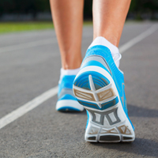

Manter o corpo bem hidratado antes, durante e após a prática de exercícios físicos é fundamental para o equilíbrio do organismo...
leia+

Para alcançar melhores resultados, é essencial planejar os treinos com metas definidas e evoluir gradualmente ao longo do tempo...
leia+

Um dos itens mais importantes tanto no cotidiano quanto na prática esportiva é o tênis. Escolher o modelo ideal pode ser mais complexo do que parece...
leia+